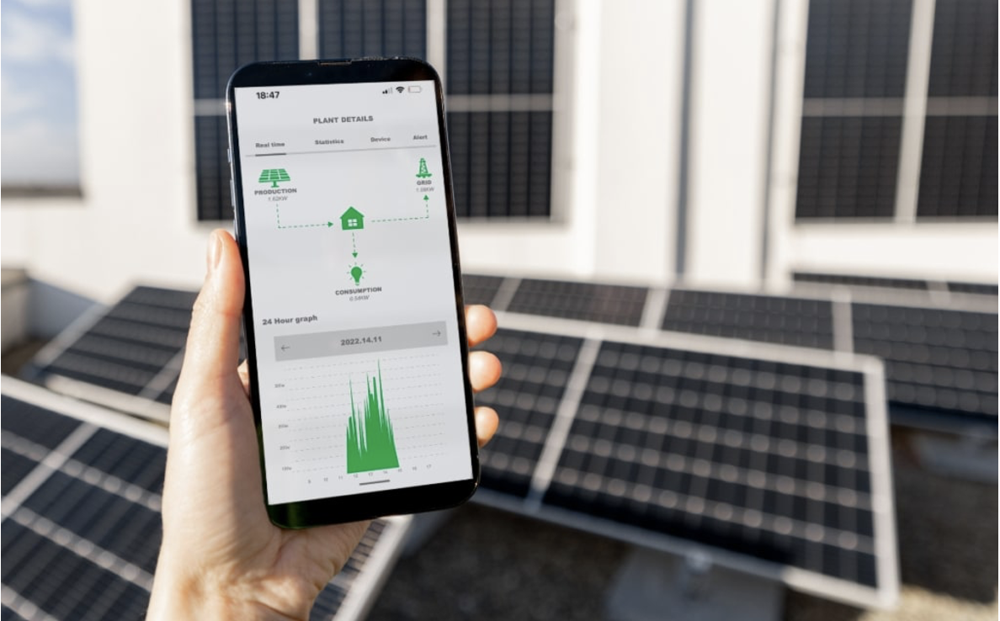

IoT-Based Remote Monitoring of Solar PV Systems
Project Overview
This project addresses the lack of real-time visibility in off-grid solar installations. We developed an IoT-enabled system to monitor critical PV parameters—voltage, current, power, irradiance, and temperature—remotely and continuously via cloud.
Features and System Highlights
- Low-cost hardware using NodeMCU (ESP8266) microcontroller
- Sensors: LM35 (panel temp), DHT11 (ambient), BH1750 (irradiance), INA219 (power)
- Real-time data uploaded to ThingSpeak IoT dashboard
- On-site LCD display for local monitoring
System Architecture

The system is designed with a three-tier layout: a solar charge controller at the base, MCU and sensors in the middle, and a display unit at the top. Data is transmitted every 15 seconds to the cloud.
Live Monitoring and Visualization
Using ThingSpeak, we display real-time plots of panel voltage, power, irradiance, and temperature. Users can identify performance trends and faults instantly from any browser or mobile device.
Results and Findings
- Max Panel Voltage: 22V
- Peak Power Output: 4.8W
- Daylight performance tracked consistently with irradiance curve
- Efficiency improved through early fault detection
Cloud Security & Mobile Access
ThingSpeak access is secured with encrypted API keys. The system supports mobile dashboard viewing for users in the field and sends alert triggers for critical thresholds.
Applications & Impact
Ideal for rural electrification programs, off-grid academic test beds, and microgrid monitoring. The system improves solar system longevity, maintenance planning, and energy accountability.
Future Enhancements
- Integrate load isolation via smart relay control
- Expand to multi-panel PV farms
- Add solar tracking and ML-based fault prediction
Publication
Published in Energy Reports (Elsevier), 2023
DOI: 10.1016/j.egyr.2023.09.060